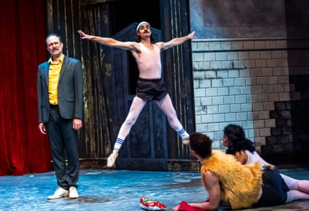

I s this show genius or self-satisfied nonsense? Is it a dadaist farce, scathing political satire or just empty surrealism? One thing’s for sure, it is completely Marmite, met with both whoops and walkouts on this London debut. Nature Theater of Oklahoma are in fact an experimental theatre company from New York, and No President, originally made in 2018 (when a certain president was in his first term), involves the following: a pair of security guards protecting a mysterious curtain and whatever is behind it, a love triangle (actually a pentagon), a rival security company in tutus, an insecure man rising to be a Trump-ish despot, and a lot, lot more.
It’s staged as a “ballet” inasmuch as the score is Tchaikovsky’s Nutcracker and the performers wear ballet flats and unitards (with cutesy knitted genitals stuck on top) while dancing their way through the show’s two hours, sometimes a bouncy jog, occasionally fouettés. Untrained dancers, like this cast, can bring many qualities to the stage – vulnerability, striving, humanity, joy – but here (at least until the very end) the mode is just lightly comic.
The physicality reads like a silent movie, but one with boners, Cheetos, cannibalism and copulating wildlife. It’s a mime act accompanied by unceasing narration, a barrage of text delivered at constant pitch and overegged volume, crammed with wordiness (“afflatus”, “feculent”, “kakistocracy”) plus some pleasing details (the devil disappearing in a puff of smoke “that smells like cheddar cheese”), with the result that it’s often indigestible.
A mime act accompanied by unceasing narration … No President.Photograph: Tristram Kenton/The Guardian
It’s clever, sure, packed with a multilayered plot and lots of ideas expressed in cartoonish fashion, whether what drives people to tyranny, or the vagaries of the artist’s ego, musing on “The B-word [boring], the worst insult to any performing artist”, and wondering if “there was no purpose for the drama that’s taken place”. Very meta.
The onslaught makes it too easy to switch off. Is that the point? That Donald Trump’s torrent of nonsense – “braggadocious verbiage” to quote from the script – ever more outrageous policies, and the hyper-stimulation of wall-to-wall media, has led a society to lose grip on its critical faculties. If so, it’s an eccentric way to make it.
No President is a wild ride, and a marathon feat for the admirably committed performers. But somehow at the same time, it is also the B-word.